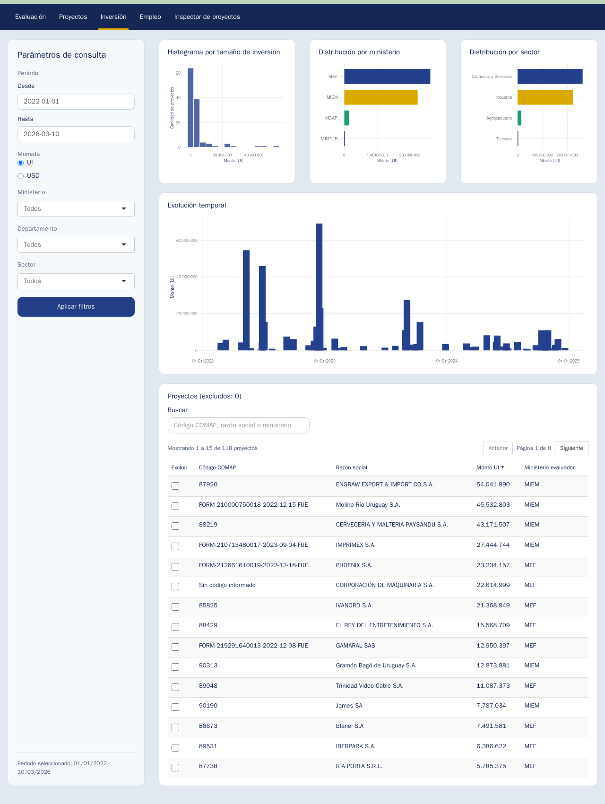

flowchart LR A["<span style='font-size:1.25em; font-weight:700;'>Problema Público</span><br/>• Baja inversión privada<br/>• Baja innovación<br/>• Desigualdad territorial<br/>• Baja internacionalización"] B["<span style='font-size:1.25em; font-weight:700;'>Insumos</span><br/>• Exoneraciones fiscales<br/>• IRAE<br/>• IVA bienes de capital<br/>• Beneficios a la inversión"] C["<span style='font-size:1.25em; font-weight:700;'>Actividades</span><br/>• Recepción de proyectos<br/>• Evaluación técnica<br/>• Asignación de puntaje<br/>• Otorgamiento de beneficios<br/>• Seguimiento de compromisos"] D["<span style='font-size:1.25em; font-weight:700;'>Productos</span><br/>• Proyectos promovidos<br/>• Inversión comprometida<br/>• Beneficios fiscales otorgados"] E["<span style='font-size:1.25em; font-weight:700;'>Resultados</span><br/>• Mayor inversión<br/>• Creación de empleo<br/>• Aumento de exportaciones<br/>• Adopción de tecnología<br/>• Descentralización territorial"] F["<span style='font-size:1.25em; font-weight:700;'>Impactos</span><br/>• Mayor productividad<br/>• Crecimiento económico<br/>• Diversificación productiva<br/>• Desarrollo territorial equilibrado"] H["<span style='font-size:1.25em; font-weight:700;'>Riesgos</span><br/>• Inversión hubiera ocurrido sin incentivo<br/>• Baja adicionalidad<br/>• Uso ineficiente del gasto tributario"] A --> B B --> C C --> D D --> E E --> F H -.-> E
COMAP — Herramienta de Monitoreo
Avance de Consultoría
Rafael La Buonora
Objetivo
- Desarrollar una herramienta informática para automatizar el monitoreo del régimen de promoción de inversiones.
Actividades consultoría
- Coordinación LM. Apoyo LB.
- Relevamiento de necesidades y recursos.
- Revisión de normativa y registros.
- Diseño e implementación de Plataforma de Monitoreo.
- Consolidar registros históricos para analítica de proyectos basada en datos.
- Desarrollo simulador de exoneraciones.
<– ## Régimen COMAP
- Teoría del Cambio
Indicadores Propuestos (1)
Desagregados por:
Sector de actividad
Ministerio evaluador
Tamaño de la empresa
Actividades (Procesos)
- Proyectos pendientes de evaluación/evaluados.
- Evaluaciones (comparar datos presentado con datos evaluados)
- Control y seguimiento
Indicadores Propuestos (2)
- Productos
- Cantidad de proyectos
- Montos de inversión promovidos
- Gasto tributario
Indicadores Propuestos (3)
- Resultados:
- Aumento de exportaciones
- Empleo incremental
- Descentralización
- Inversión en I + D
–>
Fuentes de Información
- Gran volumen de archivos XLSX dispersos en sistema de archivos.
- Datos dispersos en:
- Estructura de directorios
- Metadata de los archivos (nombres, fecha modificación, nombres de hojas)
- Celdas de Excel
- Múltiples versiones de una planilla para un mismo formulario.
- Criterios de registro de información cambia (definición de variables en los formularios).
Características del sistema
- Observabilidad
- ¿Qué pasó con este formulario?
- Trazabilidad
- ¿En qué formularios se basa este indicador?
- Seguridad
- Ambiente de desarrollo con datos reducidos.
- Ambiente de producción en red interna MEF.
Arquitectura del Sistema
flowchart LR
A[Excel] --> B[R parser]
B --> C[JSON]
C --> D[API]
D --> E[(PostgreSQL)]
E --> F[Aplicación Web]
E --> G[Tablero de Indicadores]
Modelos de Datos
flowchart LR
PROYECTO -- "N:1" --> EMPRESA
FIT -- "1:1" --> PROYECTO
FUE -- "1:1" --> PROYECTO
CONTROL_SEGUIMIENTO -- "N:1" --> PROYECTO
PUNTAJES["PUNTAJES<br/>• Empleo<br/>• Exportaciones<br/>• I+D"] --> FUE
CUADRO_INVERSIONES --> FUE
Pipeline (1): Descubrir archivos
{
"path_rel": "3 - MARZO 2025/REUNIÓN 20 03 2025/MGAP/268 - XXX, YYY, ZZZ y Otros - 91.201 - FICTO/C1/1 Doc Formales/1 FIT MGAP XXXX XXX 24.xlsx",
"filename": "1 FIT MGAP XXXX YYYY 24.xlsx",
"ext": ".xlsx",
"mtime_iso": "2024-06-25T15:09:34Z",
"provenance": {
"excel_creator": "marismendi",
"excel_last_modified_by": "Usuario",
"excel_modified_at": "2024-06-25T00:00:00Z",
},
"classification": {
"form_type": "fit",
"confidence": 0.7,
"reason": "Coincide con reglas de FIT por nombre de archivo.",
"matched_patterns": ["(?i)\\bfit\\b", "(?i).+"]
},
"import": {
"should_import": true,
}
}Pipeline (2): Convertir a formato intermedio
{
"bps": null,
"rut": "12345678910111",
"ciiu": "69201",
"giro": "Servicios contables prestados por Profesionales Independientes",
"mtss": null,
"anios": 1,
"grupo": false,
"correo": "info@xxxxxxx.com",
"sector": "Comercio y Servicios",
"monto_ui": 57365,
"objetivo": "Adquisición de mobiliario y equipamiento",
"telefono": "91055055",
"contactos": [
{
"cedula": "",
"correo": "info@xxxxx.com",
"nombre": "Nombre Apellido",
"telefono": "123456",
"direccion": ""
}
],
"evaluador": "Cra. XXXXXX",
"monto_usd": 8409.9515,
"ventas_ui": null,
"beneficios": {
"irae": true,
"tasas": false,
"ip_civil": false,
"iva_muebles": false,
"ip_inmuebles": true,
"transitorios": false,
"iva_obra_civil": false
},
"controlada": false,
"fecha_vista": null,
"indicadores": [
{
"puntaje": 10,
"indicador": "empleo",
"ponderacion": 0.5,
"puntaje_final": 5
},
{
"puntaje": 0,
"indicador": "exportaciones",
"ponderacion": 0.2,
"puntaje_final": 0
},
{
"puntaje": 4,
"indicador": "descentralizacion",
"ponderacion": 0.15,
"puntaje_final": 0.6
},
{
"puntaje": 0,
"indicador": "tecnologias_limpias",
"ponderacion": 0.2,
"puntaje_final": 0
},
{
"puntaje": 0,
"indicador": "i_d",
"ponderacion": 0.2,
"puntaje_final": 0
},
{
"puntaje": 0,
"indicador": "sectorial",
"ponderacion": 0.25,
"puntaje_final": 0
}
],
"monto_parque": null,
"razon_social": "Empresa S.A.S.",
"ventas_pesos": null,
"cotizacion_ui": null,
"empresa_nueva": false,
"fecha_balance": "2025-10-31",
"cotizacion_usd": 41.64,
"localizaciones": [
{
"padron": null,
"direccion": "Calle 6192",
"localidad": "Montevideo",
"departamento": "Montevideo"
}
],
"cuadro_inversion": {
"Maquinarias y equipos": 0,
"Obra Civil (Leyes Sociales)": 0,
"SUB-TOTAL INVERSIÓN ELEGIBLE": 57365,
"TOTAL DE INVERSIONES PROMOVIDAS": 57365,
"Maquinarias y equipos (nacional)": 57365,
"SUB-TOTAL INVERSIÓN NO ELEGIBLE": 0,
"Maquinaria y equipos (importados)": 0,
"Imprevistos - Maquinarias y equipos": 0,
"Obra Civil (Materiales y Servicios)": 0,
"Imprevistos - Obra Civil (Leyes Sociales)": 0,
"Obra Civil Interior (Materiales y Servicios)": 0,
"Obra Civil Montevideo (Materiales y Servicios)": 0,
"Imprevistos (10%) - Obra Civil (Leyes Sociales)": 0,
"Imprevistos - Obra Civil (Materiales y Servicios)": 0,
"Maquinaria y equipos (no gravados/exentos para IVA)": 0,
"Imprevistos (10%) - Maquinarias y equipos (nacional)": 0,
"Imprevistos (10%) - Maquinaria y equipos (importados)": 0,
"Imprevistos (10%) - Obra Civil (Materiales y Servicios)": 0,
"Imprevistos (10%) - Maquinaria y equipos (no gravados/exentos para IVA)": 0,
"Obra Civil Interior (Leyes Sociales, Mano de obra propia - Sueldos, Bienes y Servicios importados que integran la Obra Civil que se exoneraron por tributos a la importación )": 0,
"Obra Civil Montevideo (Leyes Sociales, Mano de obra propia - Sueldos, Bienes y Servicios importados que integran la Obra Civil que se exoneraron por tributos a la importación )": 0
},
"domicilio_fiscal": "Calle 6192",
"fecha_evaluacion": "2025-03-20",
"nombre_comercial": "Empresa S.A.S.",
"source_file_path": "/home/opp/dev/comap_data/4 - ABRIL 2025/REUNION 24.04.2025/MEF/FICTOS/268 - XXXX S.A.S. EXP. 91.587 (FICTO)/FUE FICTO DEC 268-MEF XXXX SAS Exp.91587.xlsx",
"numero_expediente": "91587",
"responsable_legal": "Nombre Apellido",
"cantidad_empleados": null,
"contribuyente_irae": null,
"fecha_presentacion": "2024-10-24",
"tipo_contribuyente": null,
"beneficios_fiscales": {
"Exoneración de IRAE": {
"tasa": 0.7578,
"aplica": true,
"exoneracion": 43471.197,
"monto_imponible": 57365
},
"Exoneración de IP Bienes muebles": {
"tasa": 0.0825,
"aplica": true,
"exoneracion": 4732.6125,
"monto_imponible": 57365
},
"Exoneración de IVA Bienes muebles": {
"tasa": 0.22,
"aplica": false,
"exoneracion": 0,
"monto_imponible": 0
},
"Exoneración de IP Obra Civil Interior": {
"tasa": 0.1365,
"aplica": false,
"exoneracion": 0,
"monto_imponible": 0
},
"Exoneración de IP Obra Civil Montevideo": {
"tasa": 0.1116,
"aplica": false,
"exoneracion": 0,
"monto_imponible": 0
},
"Tasas y tributos a la importación - CIF": {
"tasa": 0.3785,
"aplica": false,
"exoneracion": 0,
"monto_imponible": 0
},
"Tasas y tributos a la importación - FOB": {
"tasa": 0.3785,
"aplica": false,
"exoneracion": 0,
"monto_imponible": 0
},
"Exoneración de IVA Materiales y servicios de Obra Civil": {
"tasa": 0.22,
"aplica": false,
"exoneracion": 0,
"monto_imponible": 0
}
},
"ministerio_evaluador": "MEF"
}Pipeline (3) Normalizar y persistir en Base de Datos

Consultas y Búsquedas para gestión diaria
- ¿Cuántos proyectos tiene la empresa X?
- ¿Está al día con control y seguimiento?

Inspección de formularios

Pipeline (5) Análisis

Análisis

Estado actual del proyecto
- Versión 0 de todos los componentes desarrollados.
- Muestra reducida de formularios recientes (FIT, FUE, FIT Ampliación)
- Validar arquitectura, flexibilidad y agilidad.
- Trazabilidad y Observabilidad permiten iterar rápido sin perder confianza de los usuarios.